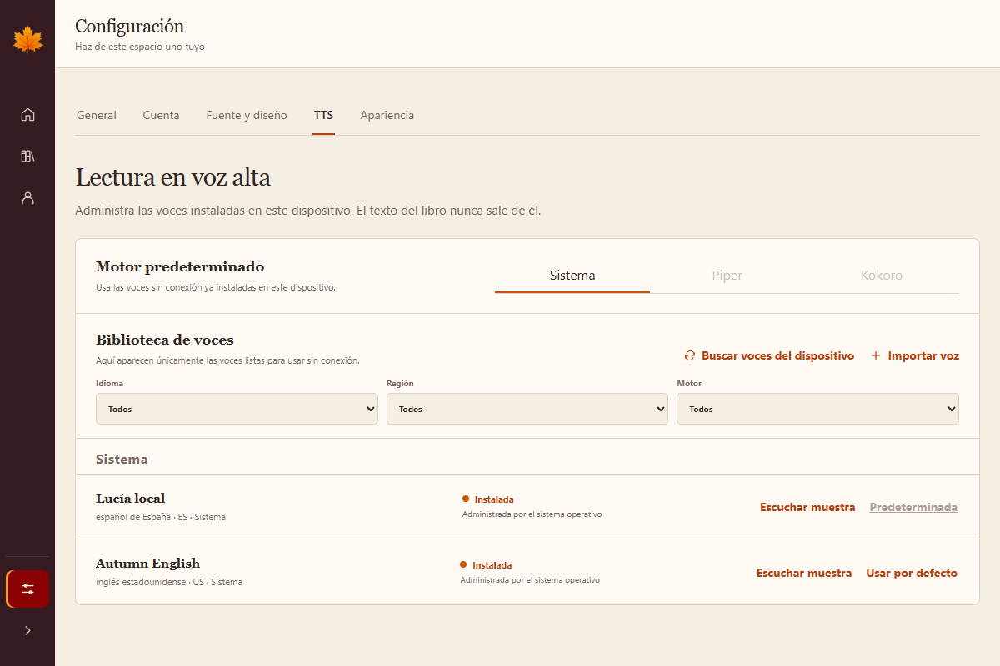

01 / OFFLINE VOICES
A voice library that belongs to your device.
Choose a system voice or import compatible Piper and Kokoro models. The library lists only voices that are installed and ready to use—there is no online voice shop and no automatic model download.
- Import sherpa-onnx packages and individual Kokoro voice files.
- Share one compatible Kokoro base model across several voices.
- Preview, set a default, inspect storage, or remove imported voices.
